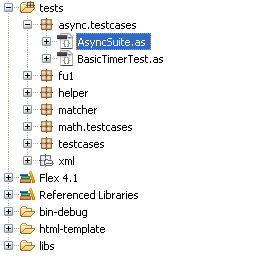
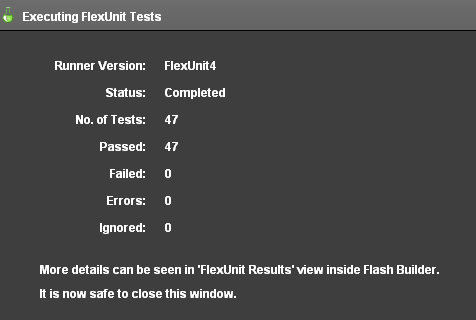
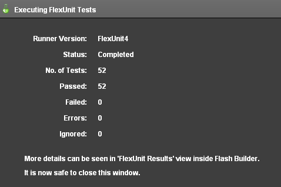
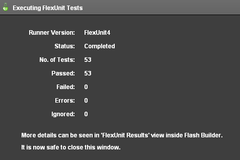

Unit 13 - Working with Asynchronous Operations
 Download Unit Project Files
Download Unit Project FilesFlexUnit 4.x takes advantage of a variety of inherently asynchronous operations. Test Fixture, Test Theories, Loading External Data, and Parameterized testing take advantage of asynchronous setup. Some tests require a span of time in order to verify expected results. FlexUnit 4.x provides tools to validate asynchronous functionality.
Objectives:
After completing this lesson, you should be able to:
- Use asynchronous handling in test cases
- Handle errors and timeouts in asynchronous style tests
- Write a chain of operations using sequences
Topics
In this unit, you will learn about the following topics:
- Understanding the need for async
- Introduction to the available async methods
- Understanding error handling with async
- Event based synchronous versus asynchronous
- Chaining async operations
Understanding the need for async
Up until now, all tests in this text have been synchronous in nature. Tests run and assertions are made line by line. However, ActionScript 3.0 and Flex are asynchronous by nature. You may have to wait for an event, a database retrieval, or a timer to complete. Currently, any of these operations would be marked as a pass or failure immediately without waiting for the actual event to be received.
Consider the external data loading you have used so far in theories and parameter tests. Loading from an XML file is asynchronous, depending on the amount of data the load time of that file can change.
Without asynchronous support, a large portion of systems would remain untested creating an easy location for bugs to hide. Race conditions can potentially be the origin of huge bugs that, without asynchronous testing, can cause countless hours of debugging.
Introduction to the available async methods
FlexUnit 4 contains extensive support for asynchronous tests. All asynchronous tests are decorated with the annotation async which notifies the runner this test is not complete once the method has reached the closing brace.
[Test( async )]
Decorating a test with async causes the runner to hold that test in memory. The test runner relies on an async handler to notify when the test is complete. Omitting an async handler will cause the test to hang indefinitely. To prevent the test from hanging, we may also decorate the test with the timeout annotation.
[Test( async, timeout="1000" )]
The Async class in FlexUnit 4 contains numerous static methods for handling async testing.
Async.asyncHandler- Most common asynchronous test. Returns a handler when the async test succeeds or fails from which additional testing can occur.Async.proceedOnEvent- Used when you are concerned if an event is thrown, but not the condition under which it is thrown. If the event is received, the test will continue, otherwise the test will be marked as a failure.Async.failOnEvent- Registers an event as an automatic failure. This handler will cause the test runner to wait a timeout period for the condition under test to fire the failure event. If no failure is received, test execution will complete under the timeout handler. If no handler is specified, the test will be marked as a success once the timeout has expired.Async.registerFailureEvent- Used when a certain event can cause a test to fail, but the event itself is not under test. If the event is received anytime during test execution the test will immediately be marked as a failure.Async.handleEvent- Used when the event is part of success of the test, but the throwing of the event itself does not indicate a success. UnlikeproceedOnEvent, this handler will call a complete handler if the event is received within the timeout period.Async.asyncResponder- Used in a similar fashion asAsync.handleEvent, however works with AsyncTokens and Responders. Not usable in ActionScript only projects.Async.asyncNativeResponder- Similar toAsync.asyncResponderand used in a similar format. Used in ActionScript projects.
Walkthrough 1: Creating a Simple Async Test with Timers
In this walkthrough you will perform the following tasks:
- Create an async test method using a timer.
- Create a new suite for async tests.
Steps
-
Import the FlexUnit4Training_wt1.fxp project from the Unit13/Start folder. Please refer to Unit 2: Walkthrough 1 for instructions on importing a Flash Builder project.
-
Create a new package named async.testcases in the tests directory.
Create a basic async test -
In the async.testcases package create a new ActionScript class named
BasicTimerTest. -
Remove the automatically created constructor from the class.
package async.testcases { public class BasicTimerTest { } }
Create an async test case -
Declare a new private property named
timerof typeTimerwithin the class.private var timer:Timer;If you did not use code-completion, add the import for flash.utils.Timer at this time.
-
Declare setup and teardown methods for the class, each marked with
[Before]and[After]metadata. The setup method will instantiatetimerwith a delay of100and a repeat count of1. The teardown method will check iftimeris running, stop it if necessary, and destroy the instance.[Before] public function setUp():void { timer = new Timer( 100, 1 ); } [After] public function tearDown():void { if( timer && timer.running ) { timer.stop(); } timer = null; } -
Write a test method named
shouldCompleteTimer(). It will add an event listener for theTimerEvent.TIMER_COMPLETEevent which will call anAsyncHandler()method. This asynchronous test must be marked with[Test( async )]metadata in order to be run asynchronously.[Test( async )] public function shouldCompleteTimer():void { timer.addEventListener( TimerEvent.TIMER_COMPLETE, Async.asyncHandler( this, handleWin, 100, timer, handleTimeout ), false, 0, true ); }asyncHandler()calls a success handler or timeout handler depending on whether theTimerEvent.TIMER_COMPLETEevent is dispatched before thetimeOutlimit.If you did not use code-completion, add the import statements for org.flexunit.async.Async and flash.events.TimerEvent at this time.
Take a look at the
Async.asyncHandler()method used within theaddEventListener()method in thetestTimerComplete()test.Async.asyncHandler( this, handleWin, 100, timer, handleTimeout )The prototype of this method is:
Async.asyncHandler(testCase:Object, eventHandler:Function, timeout:int, passThroughData:Object=null, timeoutHandler:Function=null):FunctionThis method references two functions:
handleWin()andhandleTimeout(). The methodhandleWin()is called if theTimerEvent.TIMER_COMPLETEoccurs before thetimeout, which is set at 100.handleTimeout()is the function called if the event is not dispatched before the timeout.handleWin()will receive both theeventandpassThroughDataobjects as arguments. The methodhandleTimeout()will only receives thepassThroughData. -
Add a call to the
timer.start()method on the last line of theshouldCompleteTimer()test method.[Test( async )] public function shouldCompleteTimer():void { timer.addEventListener( TimerEvent.TIMER_COMPLETE, Async.asyncHandler( this, handleWin, 100, timer, handleTimeout ), false, 0, true ); timer.start(); }You will need to declare both the
handleWin()andhandleTimeout()functions. They can be specified as protected because they are only run within the specific test case and not by the runner itself. -
Declare the
handleWin()function as protected. It should accept two parameters, one namedeventof typeEvent, and the other namedpassThroughDataof typeObject. -
The
handleTimeout()method should also be declared as protected and accept a single parameter namedpassThroughDataof typeObject.protected function handleWin( event:Event, passThroughData:Object ):void { } protected function handleTimeout( passThroughData:Object ):void { } -
Add a call to the
Assert.assertEquals()method in thehandleWin()method. It should take( event.target as Timer ).currentCountandpassThroughData.repeatCountas its arguments.protected function handleWin( event:Event, passThroughData:Object ):void { Assert.assertEquals( ( event.target as Timer ).currentCount, passThroughData.repeatCount ); } -
Add a call to the
Assert.fail()method in thehandleTimeout()method. It should take the string"Pending event timed out"as its argument.protected function handleTimeout( passThroughData:Object ):void { Assert.fail("Pending event timed out"); }If you did not use code-completion, add the import statements for flash.events.Event and org.flexunit.Assert at this time.
-
Save BasicTimerTest.as.
Create an async suite -
In the async.testcases package create a new ActionScript class named AsyncSuite. The package directory should appear as follows:
Figure 1: Package directory structure
The AsyncSuite class will behave similar to the CircleSuite, running with the suite runner and calling tests within the flexUnitTests.cases.async package.
-
Remove the automatically created constructor from AsyncSuite.as.
package async.testcases { public class AsyncSuite { } } -
Mark the AsyncSuite class definition with
[Suite]and[RunWith("org.flexunit.runners.Suite")]metadata.package async.testcases { [Suite] [RunWith("org.flexunit.runners.Suite")] public class AsyncSuite { } } -
Add a public variable named
test1of typeBasicTimerTest.public var test1:BasicTimerTest; -
Save AsyncSuite.as.
Normally, a suite is not created to contain a single test case. In this case, we know ahead of time that the
Asyncclass will eventually contain more test files.
Create a new top-level suiteAt this point, your testing environment includes test cases for the
Circleclass as well as a new one in the async.testcases package. Take this opportunity to create a new top-level suite that will run all the suites from the various packages. -
In the tests directory, create a new package named testcases.
-
In the new testcases package, create an ActionScript class named
AllSuites. This class has no superclass or interfaces. -
Remove the automatically created constructor from the new class and mark it with
[Suite]and[RunWith("org.flexunit.runners.Suite")]metadata.package testcases { [Suite] [RunWith("org.flexunit.runners.Suite")] public class AllSuites { } } -
Add a public variable named
circleSuiteof typeCircleSuiteto the new class. -
Add another public varibale named
asyncSuiteof typeAsyncSuiteto the class.[Suite] [RunWith("org.flexunit.runners.Suite")] public class AllSuites { public var circleSuite:CircleSuite; public var asyncSuite:AsyncSuite; }If you did not use code-completion, add the imports for math.testcases.CircleSuite and async.testcases.AsynSuite at this time.
-
Save AllSuites.as.
Run the new suite from the application -
Open the FlexUnit4Training.mxml file.
-
Replace
CircleSuitewithAllSuitesin thetestsToRun.push()statement.testsToRun.push( CircleSuite );Becomes:
testsToRun.push( AllSuites );If you did not use code-completion, add the import for the testcases.AllSuites at this time.
-
Remove the import statement for math.testcases.CircleSuite from the FlexUnit4Training.mxml file.
-
Save FlexUnit4Training.mxml.
-
Run the FlexUnit4Training.mxml file.
If FlexUnit4Training.mxml ran successfully you should see the following output in your browser window:
Figure 2: FlexUnit tests passed
Understanding error handling with async
In Unit 5 you learned how to handle errors using the [Test(expects="ErrorType")] metadata. Asynchronous methods can handle errors in the same way. Errors thrown in the handler are still dealt with in the test method.
[Test( async, expects="Error" )]
public function testTimerComplete():void {
timer.addEventListener( TimerEvent.TIMER_COMPLETE,
Async.asyncHandler( this, handleWin, 100, timer, handleTimeout ),
false, 0, true );
timer.start();
}
protected function handleWin( event:Event, passThroughData:Object ):void {
throw new Error();
}
As you can see, the Async.asyncHandler is called upon the TIMER_COMPLETE event, just as in the previous walkthrough. The resulting handler is simplistic, but clearly illustrates how the error is then handled through the test, where the metadata reads [Test( async, expects="Error" )]. There are several situations in which you need the message or the resulting handler to utilize passThroughData or additional custom information within the error thrown. In these cases, the expects annotation is insufficient. Here, the handler can be outfitted with a try-catch statement that handles a specific error and data potentially carried with that error.
[Test( async )]
public function testTimerComplete():void {
timer.addEventListener( TimerEvent.TIMER_COMPLETE,
Async.asyncHandler( this, handleWin, 100, timer, handleTimeout ),
false, 0, true );
timer.start();
}
protected function handleWin( event:Event, passThroughData:Object ):void {
try {
throw new TypeError();
}
catch ( e:TypeError ) {
assertThat( passThroughData, equalTo( timer ) );
return;
}
Assert.fail( "Incorrect error thrown" );
}
The try-catch statement is looking for a typeError, and then it continues to evaluate with an assertThat statement, expecting the equality of the timer and passThroughData. In these cases, the expects annotation will weaken the test. The test will only expect the kind of error specified, and it will not assert equality, such as is shown through the catch above.
Event based synchronous versus asynchronous
FlexUnit testing is based on the idea of synchronous tests occurring in order. These tests can throw events, errors, and deliver results, but they don't wait around for anything to happen, they just run.
Asynchronous tests are set apart through their metadata, and the asynchronous handlers are the only thing that can bring the test to completion. There are three primary kinds:
Normal asynchronous completion
When the test dispatches the expected event within the time limit, the eventHandler method is then called. Even though the desired event has been dispatched, the test does not automatically pass.
Async.asyncHandler(testCase:Object, <b>eventHandler:Function</b>, timeout:int, passThroughData:Object=null,
timeoutHandler:Function=null)
Asynchronous timeout
Most Async methods are created with timeout variables. If the desired event is not dispatched within the time limit, the timeoutHandler is called.
When a timeoutHandler is specified, a timeout does not mark a test as a failure. If a timeout indicates failure you need to assert as such in the timeout method.
If a timeoutHandler is not passed in, the test merely completes with a generic timeout failure.
Async.asyncHandler(testCase:Object, eventHandler:Function, timeout:int, passThroughData:Object=null,
<b>timeoutHandler:Function=null</b>)
Failure events
When using the Async.failOnEvent or Async.registerFailureOnEvent methods, specific events can be registered as an instantaneous failure.
Walkthrough 2: Handling an Event
In this walkthrough you will perform the following tasks:
- Load external data for a parameterized test.
- Create a test fixture using asynchronous startup.
- Setup a test to proceed on completion of a simulated prime calculation.
Steps
-
Create a new ActionScript class named PrimeNumberGeneratorTest.as in the async.testcases package within the tests directory.
Alternatively, if you didn't complete the previous lesson or your code is not functioning properly, you can import the FlexUnit4Training_wt2.fxp project from the Unit13/Start folder. Please refer to Unit 2: Walkthrough 1 for instructions on importing a Flash Builder project.
Create the fixture -
Mark the
PrimeNumberGeneratorTestclass with[RunWith("org.flexunit.runners.Parameterized")]metadata.[RunWith("org.flexunit.runners.Parameterized")] public class PrimeNumberGeneratorTest { public function PrimeNumberGeneratorTest() { } }You will be using JUnit style paramterized loading for this test. Because this style requires parameters to be set in the constructor, leave the constructor in place.
-
Add a private variable named
primeGeneratorof typePrimeNumberGeneratorto the class.private var primeNumberGenerator:PrimeNumberGenerator;If you did not use code-completion, add the import for net.digitalprimates.math.PrimeNumberGenerator at this time.
-
Add a private static constant named
TIMEOUTof data typeintand set it to500.private static const TIMEOUT:int = 500; -
Add another public static variable named
numberLoaderof typeNumberDataHelper. Instantiate the variable with a URL string: "xml/numberList.xml"public static var numberLoader:NumberDataHelper = new NumberDataHelper( "xml/numberList.xml" );If you did not use code-completion, add the import for helper.NumberDataHelper at this time.
-
Create a new static variable named
data. Decorate it with theParametersmetadata and pass it aloaderofnumberLoader[Parameters(loader="numberLoader")] public static var data:Array; -
Add two private instance variables of type
Numbernamedvalueandlength. In typical JUnit style, make the constructor take values for each as arguments, and set the instance variables when the constructor is run.private var value:Number; private var length:Number; public function PrimeNumberGeneratorTest( value:Number, length:Number ) { this.value = value; this.length = length; }All instance variables for the class should now be declared.
-
Create a new method named
setup()and a method namedteardown(). Decorate them with the[Before( async )]and[After( async )]metadata, respectively.[Before( async )] public function setup():void { } [After( async )] public function teardown():void { }The
asyncannotation notifies the test runner thesetup()andteardown()methods are not complete when the end brace is reached. ThePrimeNumberGeneratorsimulates this event through the use of a timer. You will need to specify a complete condition just as you would for an asynchronous test or the startup will hang indefinitely. -
Within the
setup()method, create a new instance ofprimeNumberGenerator. On the next line, add a call to the methodAsync.proceedOnEvent()passing the argumentsthis,primeNumberGeneratorandTIMEOUT.[Before( async )] public function setup():void { primeNumberGenerator = new PrimeNumberGenerator(); Async.proceedOnEvent( this, primeNumberGenerator, PrimeGeneratorEvent.GENERATOR_READY, TIMEOUT ); }Async.proceedOnEvent()causes the test runner to wait for the parameterIEventDispatcherto dispatch an event before proceeding. In this case the event is named:PrimeGeneratorEvent.GENERATOR_READY.If you did not use code completion, add the imports for org.flexunit.async.Async and net.digitalprimates.event.PrimeGeneratorEvent at this time.
-
In the
teardown()method, remove the instance ofprimeNumberGenerator.[After( async )] public function tearDown():void { primeNumberGenerator = null; } -
Your completed asynchrounous startup should now appear as:
[RunWith("org.flexunit.runners.Parameterized")] public class PrimeNumberGeneratorTest { private var primeNumberGenerator:PrimeNumberGenerator; public static const TIMEOUT : int = 500; public static var numberLoader:NumberDataHelper = new NumberDataHelper( "xml/numberList.xml" ); [Before( async )] public function setup():void { primeNumberGenerator = new PrimeNumberGenerator(); Async.proceedOnEvent( this, primeNumberGenerator, PrimeGeneratorEvent.GENERATOR_READY, TIMEOUT ); } [After( async )] public function teardown():void { primeNumberGenerator = null; } private var value:Number; private var length:Number; public function PrimeNumberGeneratorTest( value:Number, length:Number ) { this.value = value; this.length = length; } }
Create the generator test -
Add a new test method named
shouldCreatePrimeArray()to the class, mark it with[Test(async)]metadata. This method creates a new async handler to thehandleEvent()method, passing in the argumentsthis,primeNumberGenerator,PrimeNumberGenerator.GENERATION_COMPLETE,handleCompleteandTIMEOUT.[Test(async)] public function shouldCreatePrimeArray():void { Async.handleEvent( this, primeNumberGenerator, PrimeGeneratorEvent.GENERATION_COMPLETE, handleComplete, TIMEOUT ); } -
Add a call to
primeNumberGenerator.generatePrimes()method, passing in the instance variablevalueas its argument.[Test(async)] public function shouldCreatePrimeArray():void { Async.handleEvent( this, primeNumberGenerator, PrimeGeneratorEvent.GENERATION_COMPLETE, handleComplete, TIMEOUT ); primeNumberGenerator.generatePrimes( value ); } -
Create the
handleComplete()method referenced in theAsync.handleEvent()method from the previous step. It needs to accept two parameters, one namedeventof typePrimeGeneratorEvent, and another namedpassThroughDataof type Object.protected function handleComplete( event:PrimeGeneratorEvent, passThroughData:Object ):void { }The
Async.handleEvent()method above declares notimeoutHandler(), so it will just use the default message. This will suffice for this walkthrough, however it can be added as the last argument of theAsync.handleEvent()method if necessary. -
Add a call to the
assertThat()method within thehandleCompletemethod. It should assert thatevent.primeList.lengthis equal tolength.protected function handleComplete( event:PrimeGeneratorEvent, passThroughData:Object ):void { assertThat( event.primeList.length, equalTo( length ) ); }If you did not use code-completion, add the imports for org.flexunit.assertThat and org.hamcrest.object.equalTo at this time.
-
Save PrimeNumberGeneratorTest.as.
Add NumberGeneratorTest to the AsyncSuite -
Open AsyncSuite.as in the async.testcases package. Add a public variable named
test2of typePrimeNumberGeneratorTest.package async.testcases { [Suite] [RunWith("org.flexunit.runners.Suite")] public class AsyncSuite { public var test1:BasicTimerTest; public var test2:PrimeNumberGeneratorTest; } } -
Run the FlexUnit4Training.mxml file.
If FlexUnit4Training.mxml ran successfully, you should see the following in your browser window:
Figure 1: FlexUnit tests passed
Chaining async operations
Frequently, integration tests require a sequence of events before the actual test can be performed. In simple event sequences, chaining async handlers is an effective way to test component behaviors.
Consider the case of an alarm clock that cycles a series of pictures on expiration:
- A user sets an alarm.
- When the alarm expires, the system displays a series of pictures on an interval.
Now consider all the steps that occur when testing this scenario:
- The test would need to set an alarm.
- The system would need to wait for alarm expiration.
- The system would display a picture.
- The test would have to wait for the picture display time to expire.
- Repeat steps 3 and 4.
- The test would have to wait for the system to complete displaying all the pictures.
This is a testable use case. The testing concern is whether the component fires the events and system displays all the pictures. You could use a chain of async handlers.
[Test( async, ui )]
public void shouldSubmitForm():void {
//Create a new alarm clock
//Set an alarm time
//Proceed on event: "alarmExpired"
//Wait for the picture
//Proceed on event: "pictureLoaded"
//Display the picture
//Proceed on event: "pictureDisplayExpired"
//Load and display other pictures
//Proceed on event: "allPicturesDisplayed"
//Verify expected number of pictures displayed
}
As you can see, this can rapidly become very complex as we wait for event after event. Each of these asynchronous operations could require its own async handler leading to a very large test class. This is a simple example, but many UI components, which we will cover in the next unit, can rapidly devolve into a massive integration test. In addition, some components, especially higher level components, require user interaction that cannot be easily simulated through the use of async chains.
FlexUnit 4 contains a special tool for handling these types of use cases called sequences.
Understanding sequences
Sequences are methods by which a developer can create a series of tests, execute the steps and handle the resulting sequence completion. Sequences control the flow of a components execution.
Sequences have the ability to:
- Call methods
- Set properties
- Wait for events
- Dispatch events
- Wait for binding
Sequences require the test case to use the custom runner named SequenceRunner. Each sequence is created by instantiating a sequence with the current test case, adding a series of tests, adding an optional assert handler and finally running the sequence.
A simple sequence for a timer would appear as follows:
[Test( async )]
public function shouldCompleteTimerSequence():void {
var timer:Timer = new Timer( TIMEOUT );
var sequence:SequenceRunner = new SequenceRunner( this );
sequence.addStep( new SequenceCaller( timer, timer.start ) );
sequence.addStep( new SequenceWaiter( timer, TimerEvent.TIMER, TIMEOUT2 ) );
sequence.addStep( new SequenceWaiter( timer, TimerEvent.TIMER, TIMEOUT2 ) );
sequence.addStep( new SequenceWaiter( timer, TimerEvent.TIMER, TIMEOUT2 ) );
sequence.addStep( new SequenceCaller( timer, timer.stop );
sequence.addAssertHandler( handleSequenceComplete, null );
sequence.run();
}
In this example, the sequence will: start a timer, wait for the timer to cycle three times, stop the timer and make an assertion. The advantage to this setup is if the timer needed to cycle two more times you would just need to add two more sequence waiters.
In the next walkthrough, you will create your own sequence.
Walkthrough 3: Creating a chain of events with Sequences
In this walkthrough you will perform the following tasks:
- Write a sequence to test a fake database retrieval connection.
Steps
-
Create a new ActionScript class named ServiceSequenceTest.as in the async.testcases package within the tests directory.
Alternatively, if you didn't complete the previous lesson or your code is not functioning properly, you can import the FlexUnit4Training_wt3.fxp project from the Unit13/Start folder. Please refer to Unit 2: Walkthrough 1 for instructions on importing a Flash Builder project.
Create the fixture -
Remove the automatically generated constructor. You will not need it for this test.
-
Add a new private static const named
TIMEOUTof typeNumberand set it to the value500.private static const TIMEOUT:Number = 500; -
Add a private variable named
serviceof typeServiceStubto the class.private var service:ServiceStub;If you did not use code-completion, add the import for net.digitalprimates.stub.ServiceStub at this time.
-
Create the methods
setup()andteardown()and decorate them with the[Before]and[After]metadata respectively. Inside thesetup()method create a new instance ofservicevariable. In theteardown()method, set it to null so that it may be garbage collected.[Before] public function setup():void { service = new ServiceStub(); [After] public function teardown():void { service = null; }
Prepare the test case -
Create a new test called
shouldCompleteRequest(). Mark it with[Test(async)]metadata.[Test( async )] public function shouldCompleteRequest():void { }A request is considered complete when a call to the service instance's
shouldCompleteRequest()method has created a connection, sent the request and shutdown the connection. To create a test that listens for all of these events you may either create an asynchrounous chain of handlers or use a sequence. For this test, you will be using a sequence. -
Inside the body of
shouldCompleteRequest(), declare a new variablesequenceof the typeorg.fluint.sequence.SequenceRunner. Make sure you are using the correctSequenceRunnerclass.[Test( async )] public function shouldCompleteRequest():void { var sequence:SequenceRunner = new SequenceRunner( this ); }If you did not use code-completion, add the import for org.fluint.sequence.SequenceRunner at this time.
Create the SequenceThe next block will setup all the
SequenceCallersandSequenceWaitersfor theSequenceRunner. In this step you will want to test that whensendRefreshRequest()is called service creates a connection to the server, sends a refresh request and closes the connection. It is phrased politely because the server may take longer to complete this request depending on various factors such as connection speed, number of requests, etc.To add these steps, you will use the sequence's
addStep()method. This method has a single parameter, which must be of typeorg.fluint.sequence.ISequenceStep. A sequence does not execute until itsrun()method is called. -
Add a call to
sequence.addStep()passing as an argumentnew SequenceCaller(). Pass theSequenceCallerconstructor the argumentsserviceandservice.sendRefreshRequest.sequence.addStep( new SequenceCaller( service, service.sendRefreshRequest ) );If you did not use code-completion, add the import for org.fluint.sequence.SequenceCaller at this time.
SequenceCallersets up an asynchronous delay for the method call. Instead of calling it now, the method will be called when the sequence runs. -
Next, add a step to the sequence passing as an argument a new instance of the
SequenceWaiterclass. Pass itservice,StubServiceEvent.CONNECTION_CREATED, andTIMEOUTas its arguments.sequence.addStep( new SequenceWaiter( service, StubServiceEvent.CONNECTION_CREATED, TIMEOUT ) );If you did not use code-completion, add the imports for org.fluint.sequence.SequenceWaiter and net.digitalprimates.event.StubServiceEvent at this time.
A
SequenceWaitercreates an asynchronous handler for the parameter event. When this event is dispatched, the sequence will continue. If the event is not dispatched before the timeout, the timeout handler is called. In this case you are using the default timeout handler which will throw an error. When dealing with a long sequence it is generally best practice to create a custom handler for eachSequenceWaiterto avoid confusion. -
On the next line add a call to the
addStep()method that instantiates anew SequenceWaiterwith argumentsservice,StubServiceEvent.RECEIVED_REQUEST, andTIMEOUT.sequence.addStep( new SequenceWaiter( service, StubServiceEvent.RECEIVED_REQUEST, TIMEOUT ) ); -
Add a final SequenceWaiter with arguments
service,StubServiceEvent.SHUTDOWN_RECEIVED, andTIMEOUT.sequence.addStep( new SequenceWaiter( service, StubServiceEvent.SHUTDOWN_RECEIVED, TIMEOUT ) );The expected sequence is now set. However, there is no assert set for the completion of the sequence. Currently, as long as all the events are received in order the test is a success. If any of the events are not received within the specified timeout limit, the test fails.
-
Add a call to
service.addAssertHandler()passinghandleCompleteRequestandnull.sequence.addAssertHandler( handleCompleteRequest, null );The
addAssertHandleradds an async handler for when the sequence completes successfully and will call the method specified. In this case, it will callhandleCompleteRequest(). -
To complete the sequence, call
sequence.run()within theshouldCompleteRequest()method.sequence.run();Your complete
shouldCompleteRequest()method should now appear as follows:[Test( async )] public function shouldCompleteRequest():void { var sequence:SequenceRunner = new SequenceRunner( this ); sequence.addStep( new SequenceCaller( service, service.sendRefreshRequest ) ); sequence.addStep( new SequenceWaiter( service, StubServiceEvent.CONNECTION_CREATED, TIMEOUT ) ); sequence.addStep( new SequenceWaiter( service, StubServiceEvent.RECEIVED_REQUEST, TIMEOUT ) ); sequence.addStep( new SequenceWaiter( service, StubServiceEvent.SHUTDOWN_RECEIVED, TIMEOUT ) ); sequence.addAssertHandler( handleCompleteRequest, null ); sequence.run(); }If you did not use code-completion, add import statements for, org.fluint.sequence package.SequenceCaller and org.fluint.sequence package .SequenceWaiter at this time.
-
Create the
handleCompleteRequest()function. This function takes two paramters; one namedeventof typeEventand another namedpassThroughDataof typeObject.protected function handleCompleteRequest( event:Event, passThroughData:Object ):void { }If you did not use code-completion, add the import for flash.events.Event at this time.
-
Add a call to
assertFalse()within thehandleCompleteRequest()method, asserting that service connection has been terminated.protected function handleCompleteRequest( event:Event, passThroughData:Object ):void { assertFalse( service.connected ); }If you did not use code-completion, add the imports for org.flexunit.assertThat at this time.
-
Save ServiceSequenceTest.as.
Add the new case to AsyncSuite -
Open the AsyncSuite.as file in the async.testcases package.
-
Add a new public variable named
test3of typeServiceSequenceTestto the class.package async.testcases { [Suite] [RunWith("org.flexunit.runners.Suite")] public class AsyncSuite { public var test1:BasicTimerTest; public var test2:PrimeNumberGeneratorTest; public var test3:ServiceSequenceTest; } } -
Save the AsyncSuite.as file.
-
Run the FlexUnit4Training.mxml file.
If FlexUnit4Training.mxml ran successfully you should see the following output in your browser window:
Figure 1: FlexUnit tests passed.
Summary
Fully testing the behavior of a class often involves calling methods, waiting for asynchronous events and verifying the response.
Decorating the
[Test]metadata with theasyncannotation notifies the runner that the test is not complete once the method has reached its closing brace.The
Asyncclass is used to set up completion and timeout handlers for the test.Annotating the
[Test]metadata withexpectsallows for asynchronous error handling.Sequences can be used to test a series of asynchronous operations.